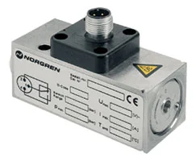

31 mã sản phẩm
Danh sách canonical dẫn về trang chi tiết từng part number.
Công tắc và cảm biến chân không (vacuum switches) Norgren giám sát mức chân không và xác nhận vật đã được gắp giữ chắc trước khi di chuyển, giúp tăng độ tin cậy cho hệ gắp – đặt. Khi chọn, bạn cần xác định dải đo chân không, ngưỡng đóng ngắt, kiểu ngõ ra (switch, analog, IO-Link) và kiểu kết nối, nên đối chiếu part number với datasheet trước khi báo giá để khớp tín hiệu với bộ điều khiển. Nếu bạn đang bổ sung giám sát chân không cho một hệ gắp sẵn có, hãy gửi thông số ejector và tín hiệu cần xuất để chúng tôi tư vấn mã phù hợp. Trang giúp đội mua hàng và kỹ sư tự động hóa tại Việt Nam tra cứu nhanh theo mã, so sánh biến thể ngõ ra và tìm phụ kiện liên quan như cáp, đầu nối M8/M12 và co nối. Gửi part number, BOM hoặc yêu cầu giám sát để được tư vấn đúng dải đo, ngưỡng và báo giá.

Để chọn công tắc chân không, hãy gửi dải chân không làm việc, ngưỡng cần báo và kiểu ngõ ra ghép với PLC. Nếu hệ có nhiều điểm gắp, cho biết số kênh cần giám sát để chúng tôi đề xuất cấu hình. Đầu nối thường là M8 hoặc M12, nên chúng tôi tư vấn cáp tương thích kèm theo. Cấu hình được xác minh theo datasheet Norgren trước khi báo giá để đảm bảo tín hiệu đúng và lắp đặt nhanh, không phải đổi mã.
Danh sách canonical dẫn về trang chi tiết từng part number.
Datasheet, brochure, installation guide hoặc tài liệu liên quan.
Mã liên quan giúp đặt đồng bộ và tránh thiếu vật tư khi lắp.
Hiển thị 3 mã thuộc category này.
18D Electro-mechanical pneumatic vacuum switch, G1/4, -1-0 bar

18D Electro-mechanical pneumatic vacuum switch, G1/4, -1-1 bar

18D Electro-mechanical pneumatic vacuum switch, G1/4, -1-0 bar
Để xác nhận vật đã được giữ đủ chân không trước khi di chuyển. Bạn gửi yêu cầu ngưỡng và ngõ ra để chúng tôi đối chiếu datasheet và chọn mã trước khi báo giá.
Tùy mã. Một số dòng hỗ trợ IO-Link cùng switch. Gửi part number để chúng tôi xác nhận ngõ ra theo thông số kỹ thuật.
Nhiều mã cho phép cài ngưỡng. Bạn gửi yêu cầu để chúng tôi chọn mã có dải cài đặt phù hợp.
Thường là M8/M12. Chúng tôi báo giá kèm phụ kiện liên quan như cáp và đầu nối tương thích.